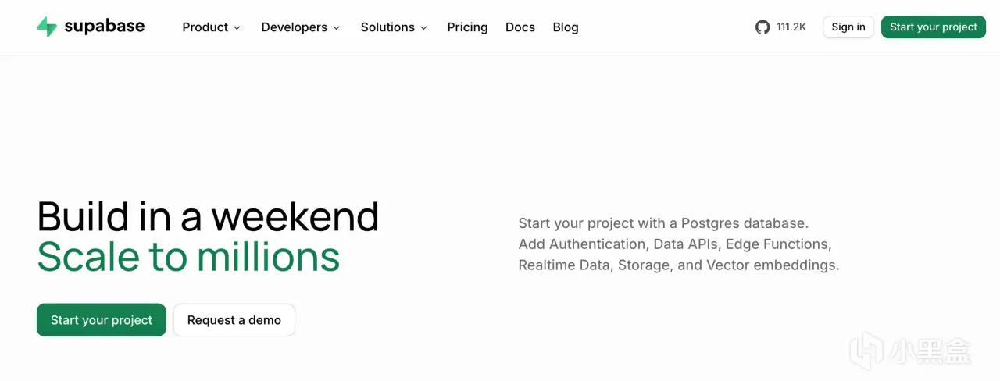

如果盒友想要搞一个带登录、还要存数据的小网站，没必要上来就考虑服务器。
推荐一下 Supabase。

一个免费的数据库，后端也顺便有了。
个人项目可以一个月 0 块。
页面放 Cloudflare Pages，用户和数据放这。
主包之前的穷鬼全栈套餐那篇里它只占了一小段，这次单独细嗦一下。
注册登录不用自己写。
邮箱、Google、GitHub 都能接，免费版 5 万月活。
数据库是 Postgres，一个项目 500MB，小网站怎么都够了。
只要图片和日志别往里放。。。
查数据也不用再写一套接口，直接提供现成的api和node sdk访问数据。
前端可以直接对接。
官网写 API 请求次数不限，但是如果库满了、流量超了还是会被无情限流，无限白嫖是不可能滴。
说到坑。
免费项目一周没什么访问会暂停。
不是七天没登后台，是过去一周没有请求访问数据库。
快停的时候会发邮件，真停了后台也能恢复。
虽然免费版也自带了验证邮件，但最好还是别用。。。
现在大概一小时 2 封，组织外面的邮箱还经常被拒，官方自己也说这档不保证能送到。
给真用户发，可以换 Resend，免费档一天 100 封，注册和通知够用，群发就算了。
免费版不给每天自动备份，要这个得付钱，Pro 才能看最近 7 天。
如果有备份需求需要手动导出来，不是很优雅。。
免费版还提供了1GB存储，一个文件最大 50MB，流量一个月 5GB。
但我还是建议，图片、PDF 可以放 Cloudflare R2，赛博菩萨这里下载不收出口流量费。
为啥文件别和数据库搁一起，下篇再说。
按钮怎么点就不写了。让 AI 看着文档自己去弄就行，手搓真没必要。
OK啊朋友们，欢迎收藏